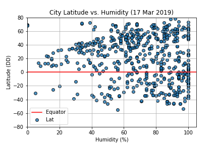

Humidity
The relationship between latitude and humidity inferred from this dataset are fairly inconclusive. Based on this dataset, there appear to be more weather stations experiencing higher humidity (> 60%) than lower humidity.
The relationship between latitude and humidity inferred from this dataset are fairly inconclusive. Based on this dataset, there appear to be more weather stations experiencing higher humidity (> 60%) than lower humidity.